Sistemas de Ficheros
Se pedía preparar particiones ext4 y NTFS, montarlas y configurar su montaje automático. Se han creado particiones en discos de 20 y 25 GiB, formateado, creado archivos y carpetas de prueba, comprobado el montaje y añadido sus UUID a /etc/fstab. Se muestran dos pruebas sobre /dev/sdb1, primero en un disco de 20 GiB y después en uno de 25 GiB.
Identificación de los discos disponibles mediante fdisk -l. La captura diferencia el disco del sistema /dev/sda del disco adicional /dev/sdb, que tiene 20 GiB y se utilizará en las pruebas con ext4.
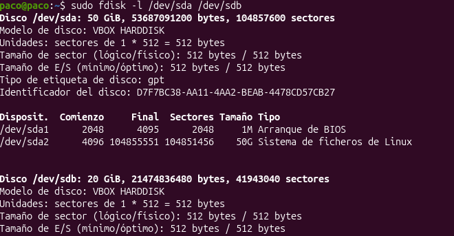
Creación y guardado de una partición primaria de 20 GiB en /dev/sdb. En fdisk se crea la partición con la opción n y se guardan los cambios con w. A partir de ese momento se dispone de /dev/sdb1 para crear el sistema de archivos.
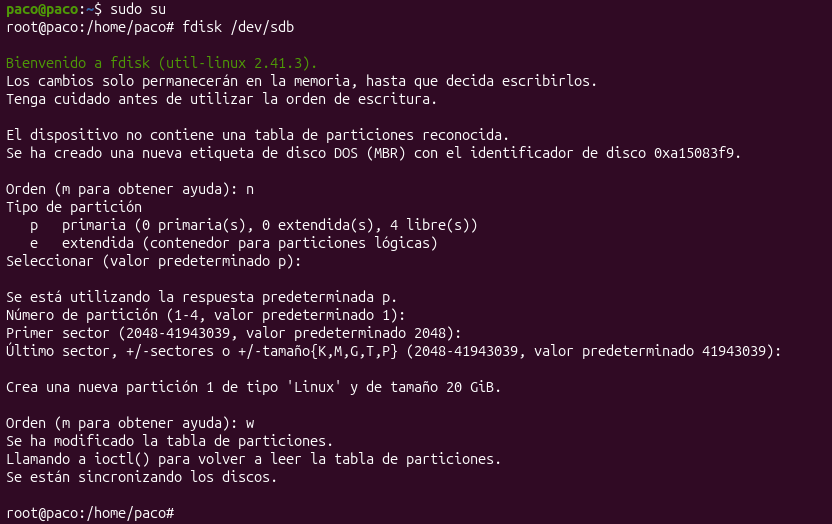
Creación del sistema ext4 en /dev/sdb1 con bloques de 2048 bytes mediante mkfs.ext4 -b 2048. La opción -b establece el tamaño de bloque. La salida muestra la creación de las tablas de inodos, el diario y los superbloques necesarios para organizar los archivos.
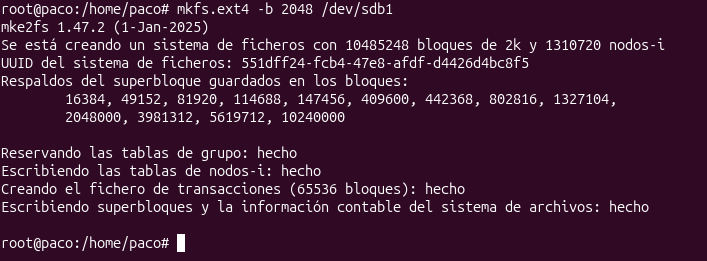
Creación del directorio /mnt/particio1 como punto de montaje. Este directorio será la ruta desde la que se accederá al contenido del disco. Crearlo no monta todavía la partición: el montaje se realiza en el paso siguiente.
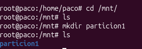
Montaje de la partición ext4 y creación de las carpetas prueba y prueba2. También aparece lost+found. La orden mount vincula /dev/sdb1 con /mnt/particio1. Las carpetas de prueba permiten comprobar que se puede escribir en la partición; lost+found es un directorio propio de ext4.
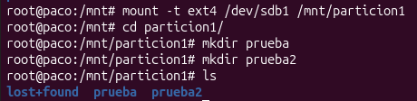
Desmontaje de /dev/sdb1. El directorio de montaje deja de mostrar el contenido de la partición. Antes de ejecutar umount se sale del directorio con cd .. . Los archivos permanecen en la partición, pero dejan de ser accesibles desde ese punto mientras está desmontada.
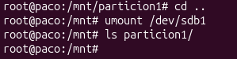
Comparación con df -hT antes y después del montaje. blkid muestra el UUID y confirma el tipo ext4. La opción -h presenta las capacidades en unidades legibles y -T indica el tipo de sistema de archivos. El UUID obtenido con blkid identifica el volumen para configurar su montaje.
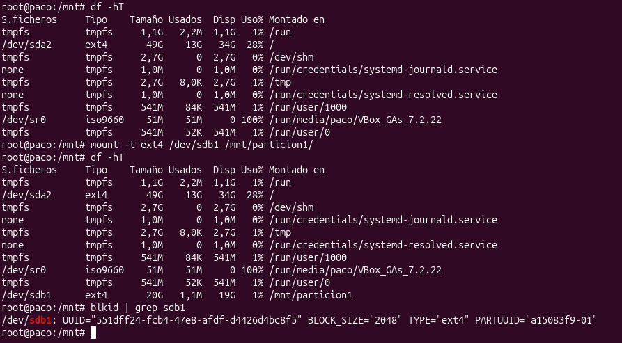
Entrada en /etc/fstab para montar ext4 por UUID en /mnt/particio1. La línea relaciona el identificador del volumen con el directorio de montaje y el tipo ext4. Así se configura el montaje sin depender únicamente del nombre /dev/sdb1.
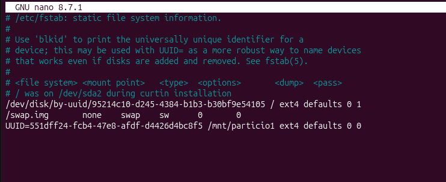
Comprobación del montaje ext4 y del acceso a las carpetas de prueba. df -hT permite revisar el tipo, el espacio disponible y la ruta de montaje. El listado de /mnt/particio1 muestra que las carpetas creadas anteriormente siguen accesibles.
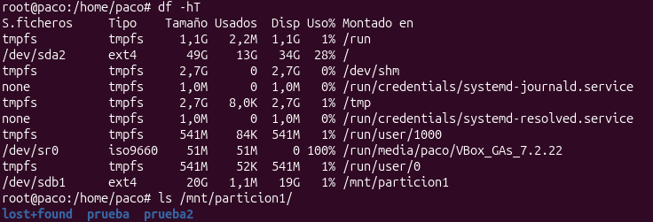
Identificación de un segundo disco de 25 GiB para la prueba con NTFS. La consulta de fdisk permite comprobar la capacidad del disco de trabajo antes de particionarlo. En esta prueba el disco del sistema sigue apareciendo separado como /dev/sda.
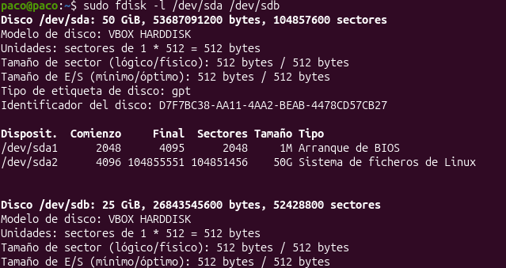
Creación de una partición primaria de 25 GiB en /dev/sdb con fdisk y guardado de la tabla MBR. Se elige una partición primaria y se utilizan los sectores propuestos para ocupar el espacio disponible. La opción w escribe los cambios en el disco.
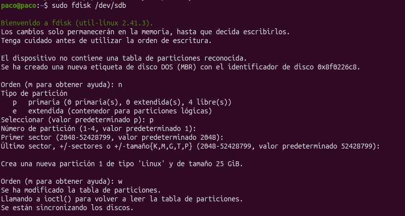
Formateo rápido NTFS con mkfs.ntfs -Q. La salida confirma la creación del volumen con clústeres de 4096 bytes. La opción -Q solicita un formateo rápido y se crean las estructuras del sistema de archivos. El mensaje de finalización confirma que mkfs.ntfs ha completado la operación.
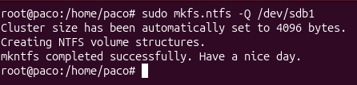
Creación del directorio /mnt/particio2 para montar el volumen NTFS. Este directorio servirá como acceso al contenido de la partición. Se utiliza una ruta distinta de la prueba con ext4 para identificar claramente el montaje NTFS.
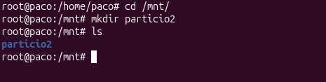
Montaje mediante ntfs-3g y creación de dos carpetas y un archivo para comprobar la escritura. La orden mount selecciona el controlador ntfs-3g. Después, mkdir y touch crean elementos dentro del volumen, y ls permite comprobar que aparecen correctamente.
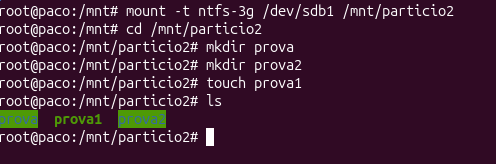
Desmontaje de NTFS. El punto de montaje queda sin los archivos de la partición. Se sale de la carpeta antes de ejecutar umount sobre /dev/sdb1. Que el directorio quede vacío no significa que se hayan borrado los datos del volumen.
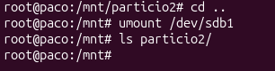
df -hT muestra el volumen de 25 GiB montado en /mnt/particio2 como fuseblk tras usar ntfs-3g. La primera consulta sirve de referencia antes del montaje y la segunda muestra el volumen ya accesible. fuseblk es el tipo que presenta este montaje realizado mediante FUSE.
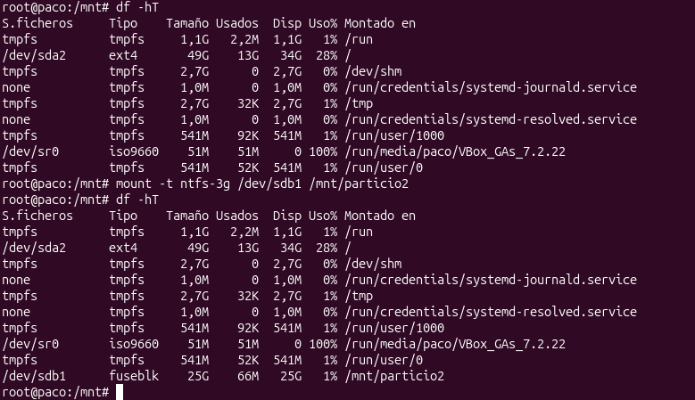
Obtención del UUID 73A0F9F536E99C24 y del tipo ntfs mediante blkid. El identificador permite referirse al volumen en la configuración de montaje. También se muestran el tamaño de bloque informado por blkid y el identificador de la partición.
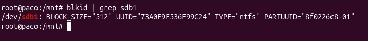
Edición de /etc/fstab con el UUID del volumen NTFS, el punto /mnt/particio2 y el controlador ntfs-3g. La entrada asocia el volumen con su directorio y establece las opciones defaults. Esta configuración permite que el sistema intente montarlo automáticamente al arrancar.
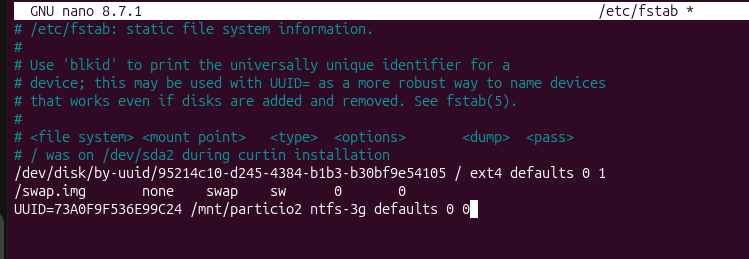
Comprobación final del montaje NTFS y de los elementos de prueba. No se ve una prueba de reinicio en esta captura. df -hT confirma que el volumen está accesible en /mnt/particio2 y ls muestra las carpetas y el archivo creados. Se comprueba así el acceso a los datos en ese momento.
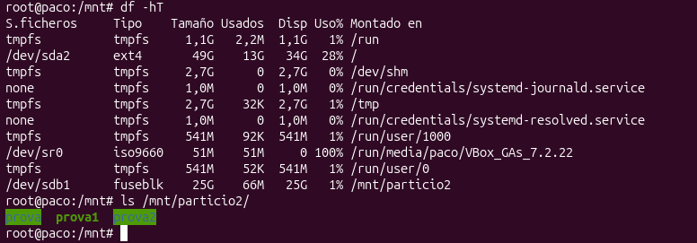
↑ Tornar a l'índex
Tipo de Formateo
Se pedía comparar el formateo con la sobrescritura de una imagen de disco y comprobar la recuperación de archivos.
Archivos iniciales en /mnt/prova y cálculo de sus hashes SHA-256. Los valores se guardan en originals.sha para utilizarlos como referencia. Compararlos con los de los archivos recuperados permitiría comprobar si su contenido coincide byte a byte.
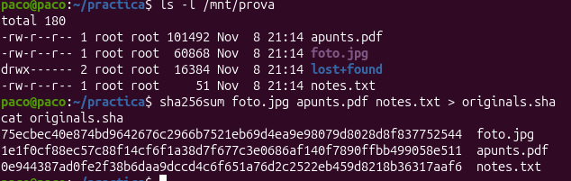
Tras el formateo, el listado de la imagen montada muestra únicamente lost+found; los archivos ya no aparecen en el directorio. El montaje se realiza con la opción loop porque se trabaja sobre el archivo disc.img. Después de revisar el contenido se desmonta la imagen para continuar con la recuperación.
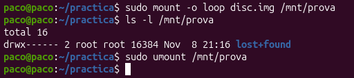
Consulta de los hashes originales. Falta mostrar los hashes de los archivos recuperados para poder compararlos. La orden cat originals.sha muestra los valores guardados antes del formateo. Estos son la referencia de comparación, pero por sí solos no demuestran que se hayan recuperado los archivos.
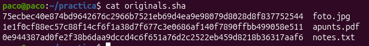
strings y grep localizan la frase con la palabra pizza dentro de disc.img después del formateo. strings extrae secuencias de texto legibles y grep filtra las que contienen esa palabra. El resultado muestra que la frase seguía presente aunque el archivo ya no apareciera en el directorio.
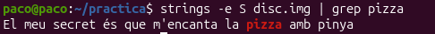
PhotoRec se ejecuta sobre disc.img y el listado de recup_zeros.1 contiene numerosos archivos .dovecot. No acredita una recuperación vacía. La orden indica a PhotoRec dónde buscar y dónde guardar los resultados. El listado obtenido debe revisarse antes de concluir que el contenido del disco se ha eliminado por completo.
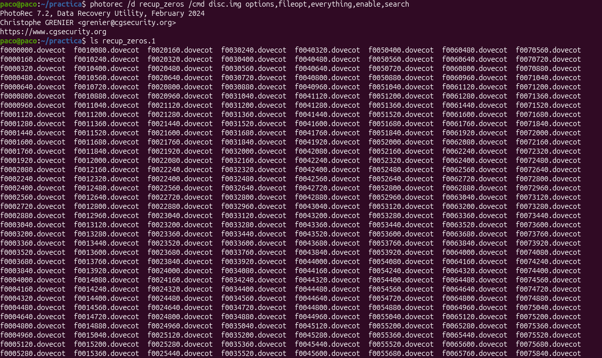
La búsqueda de pizza ya no devuelve resultados. Esto demuestra que esa cadena no se encuentra, no una verificación completa de borrado. Se repite la misma búsqueda utilizada anteriormente para comparar el resultado. Al volver directamente al indicador del terminal, no se ha encontrado ninguna coincidencia con esa palabra.
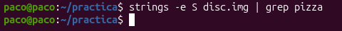
↑ Tornar a l'índex
Gestión de Procesos
Se pedía diagnosticar la lentitud del sistema, identificar procesos y controlar su ejecución. Se han preparado los scripts, localizado los procesos con ps y pgrep, revisado la CPU con top, gestionado la descarga con fg y bg, cambiado su prioridad y probado señales para detener, reanudar y terminar procesos.
Preparación de los scripts de la misión y asignación del permiso de ejecución con chmod +x. El primer intento de ejecutar minador falla por falta de ese permiso. Los scripts se guardan en la carpeta de la misión y se comprueban con ls -l. Tras conceder permiso de ejecución, se lanza el script que inicia los procesos de prueba.
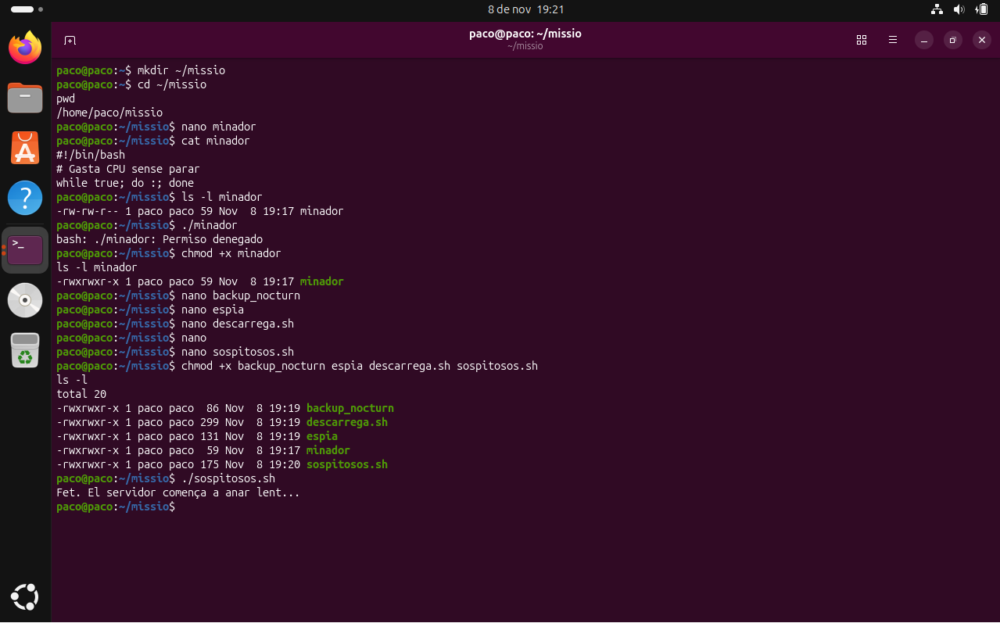
Árbol de procesos con sus PID. Se observan backup_nocturn y espia con procesos sleep asociados. La estructura permite ver qué procesos dependen de otros. Los números entre paréntesis son sus identificadores y ayudan a localizar cada instancia para consultarla o enviarle señales.
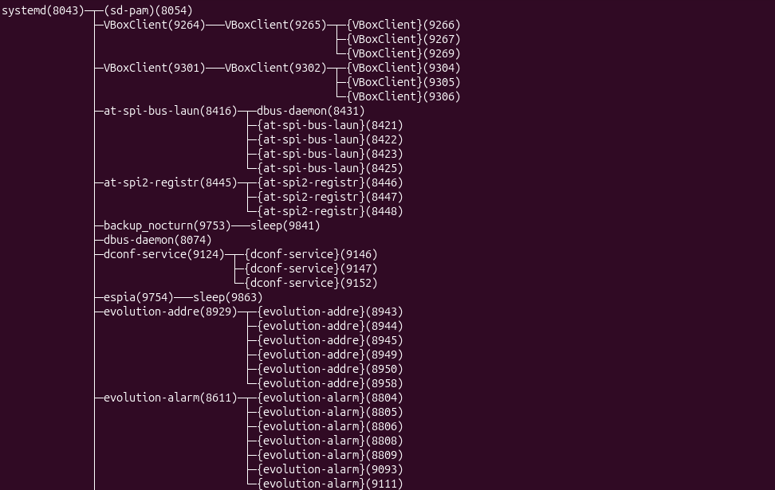
Continuación del árbol de procesos: aparecen dos instancias de minador y la relación entre el terminal, bash y pstree. Cada instancia de minador tiene un PID distinto aunque ejecute el mismo programa. El árbol también muestra que pstree se ejecuta desde una shell del terminal.
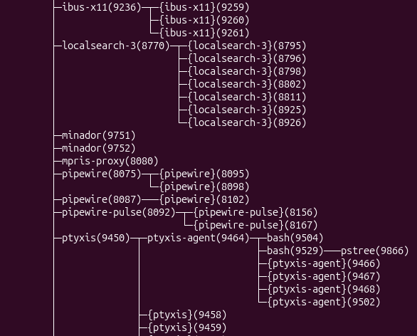
top y ps ordenado por CPU muestran dos procesos minador que consumen aproximadamente la mitad de una CPU cada uno. La visualización de top permite observar el consumo en tiempo real y la consulta de ps ofrece una lista ordenada. Ambas ayudan a identificar los procesos que están ocupando la CPU.
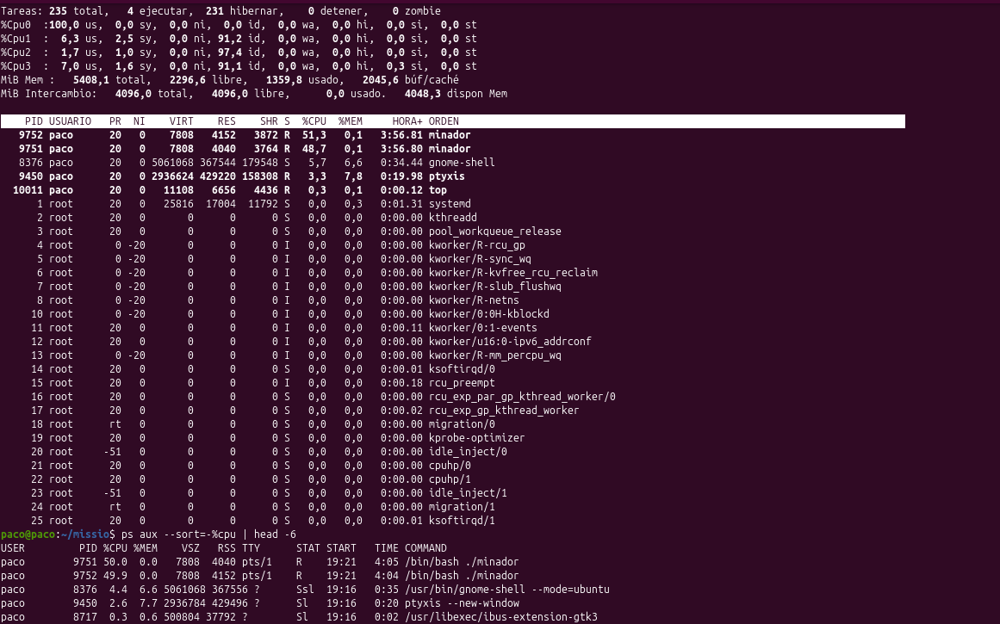
Localización de procesos con ps, grep y pgrep. La consulta por PID identifica systemd como padre de los dos minador. pgrep devuelve los PID de los procesos buscados, mientras que ps permite seleccionar columnas como PID, PPID, estado y CPU. El PPID sirve para identificar el proceso padre.
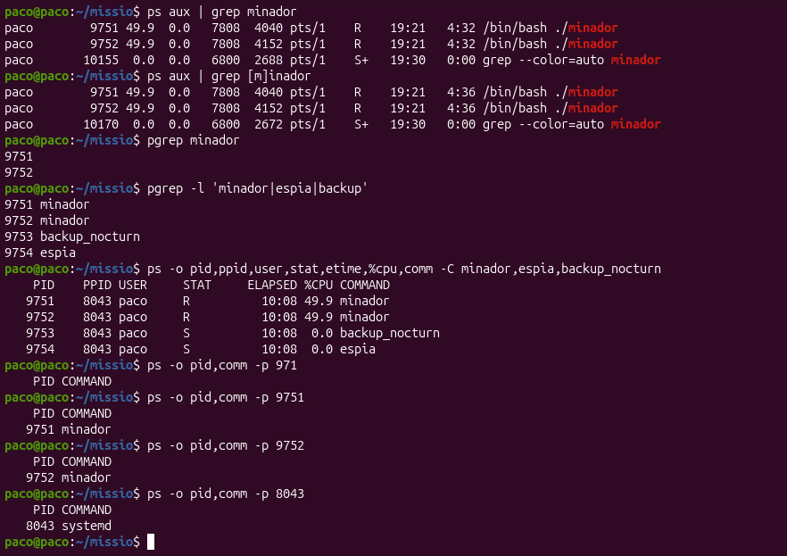
La descarga se detiene con Ctrl+Z, continúa con bg y vuelve al primer plano con fg. jobs -l muestra el estado del trabajo. Ctrl+Z suspende temporalmente el trabajo y bg lo reanuda sin ocupar el primer plano del terminal. El seguimiento del archivo de progreso permite comprobar que la descarga sigue avanzando.
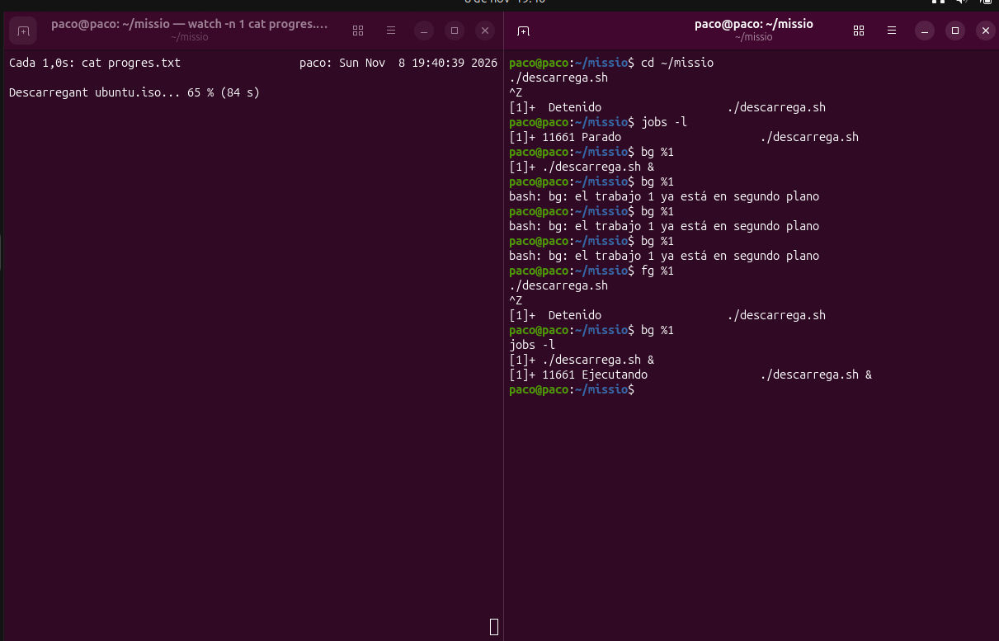
El intento de establecer nice -10 sin privilegios falla; con sudo renice se aplica. top muestra la descarga con NI -10. Un valor nice menor da más preferencia al proceso cuando compite por CPU. Se necesitan privilegios para reducir ese valor, y la columna NI permite comprobar el cambio aplicado.
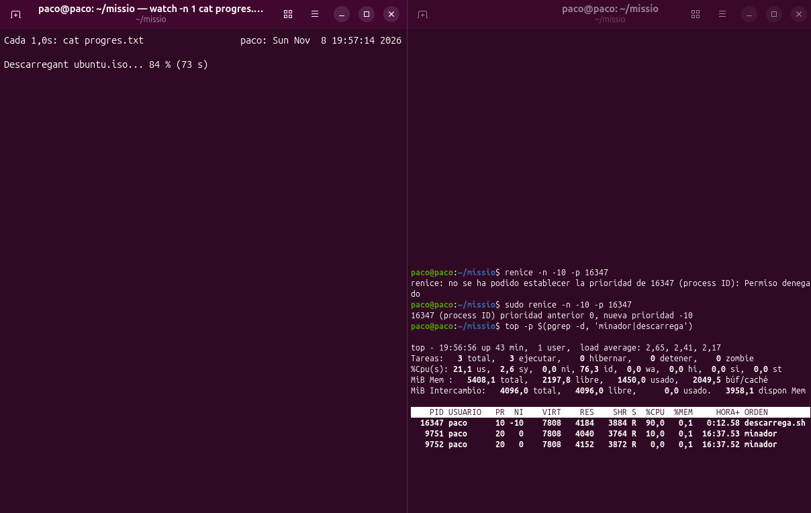
espia se termina con SIGKILL y backup_nocturn pasa por los estados detenido y reanudado. Los dos minador siguen apareciendo tras el intento de kill. SIGKILL fuerza la terminación de espia, mientras que STOP y CONT suspenden y reanudan backup_nocturn. Las consultas posteriores permiten distinguir los procesos terminados de los que continúan activos.
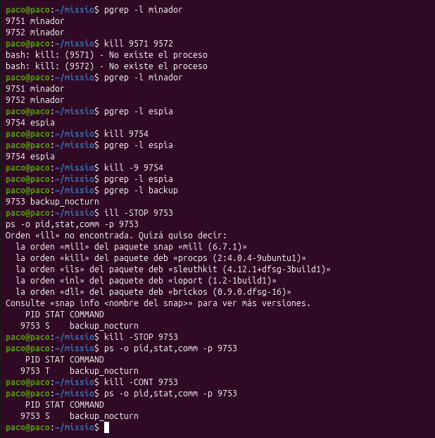
↑ Tornar a l'índex
Gestión Usuarios 1
Se pedía administrar las cuentas y los grupos de PixelForge, desde su creación hasta su modificación y eliminación. Se han consultado identidades, comprobado las cuentas creadas, probado sesiones, cambiado grupos, bloqueado y desbloqueado a marc y renombrado nuria como nvidal.
Consulta de identidad, UID, grupos y archivos de cuentas. /etc/shadow requiere privilegios y /etc/skel contiene los archivos base del perfil. whoami e id muestran el usuario actual y sus grupos. La comparación entre el intento de leer shadow sin privilegios y la consulta con sudo evidencia la restricción de acceso a ese archivo.
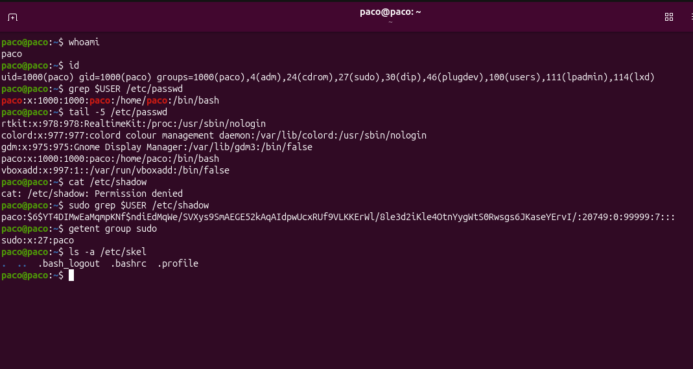
Comprobación de las carpetas personales y de las cuentas nuria, pau, marc y laia con getent passwd. getent muestra para cada cuenta su UID, GID, directorio personal y shell. El listado de /home permite contrastar esas rutas con las carpetas existentes.
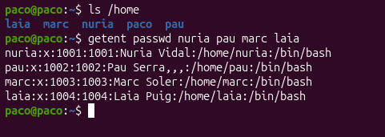
Inicio de sesión con su - nuria y creación de primer_dia.txt en su carpeta personal. whoami confirma la identidad de la sesión y pwd muestra el directorio de trabajo. El archivo creado con touch queda asociado al usuario nuria, como se observa en ls -l.
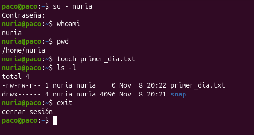
Creación de grupos y eliminación del grupo de prueba progamadors. El listado permite distinguir nombres muy parecidos. Las órdenes groupadd y addgroup crean grupos, mientras que groupdel elimina el grupo indicado. La consulta posterior con getent permite comprobar que el nombre eliminado ya no aparece.
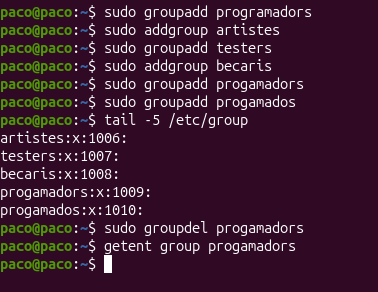
usermod -G sustituye los grupos suplementarios de nuria; -aG añade programadors. También se retira a laia de artistes. La diferencia entre -G y -aG es importante para no perder pertenencias existentes. La salida de groups y getent permite revisar cómo quedan los equipos después de cada cambio.
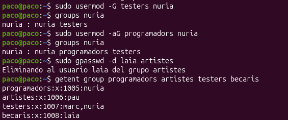
Cambio del grupo principal de pau a programadors. Se comprueban la identidad y el grupo de los archivos de su carpeta personal. usermod -g establece el grupo principal de la cuenta y una nueva sesión permite comprobar el resultado. Los listados muestran cómo quedan asignados los grupos de los archivos del directorio personal.
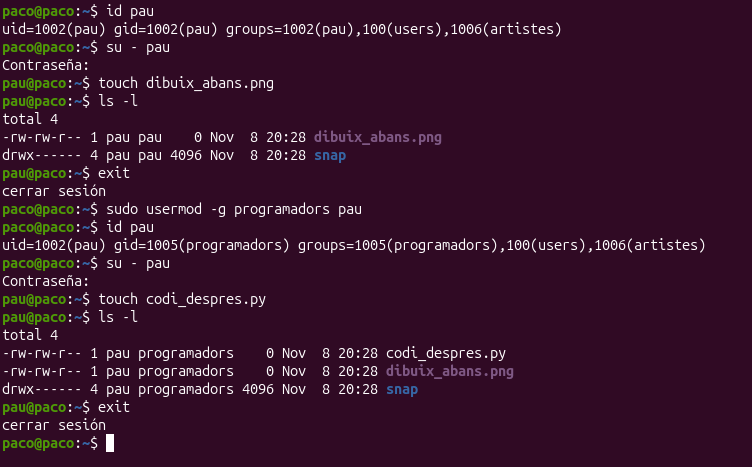
Bloqueo y desbloqueo de la contraseña de marc con passwd. La prueba con su falla durante el bloqueo y funciona después. passwd -S permite consultar el estado de la contraseña antes y después del cambio. Las opciones -l y -u bloquean y desbloquean su uso, y la prueba de inicio de sesión muestra el efecto.
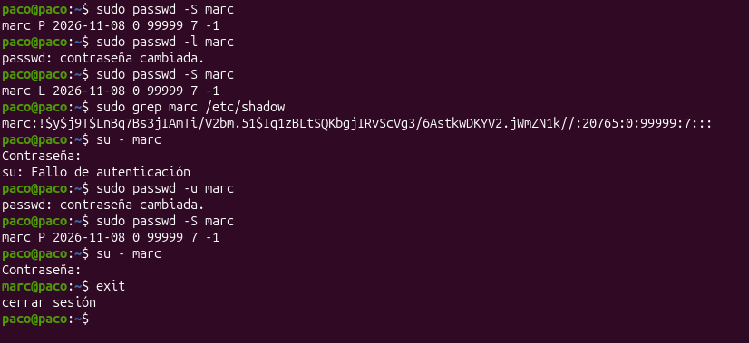
Cambio de nuria a nvidal, renombrado de su grupo y traslado de su carpeta personal. La sesión final confirma el nuevo nombre. El cambio del nombre de acceso, el del grupo y el traslado del directorio se realizan con operaciones distintas. La comprobación con id y el inicio de sesión permiten revisar la nueva configuración.
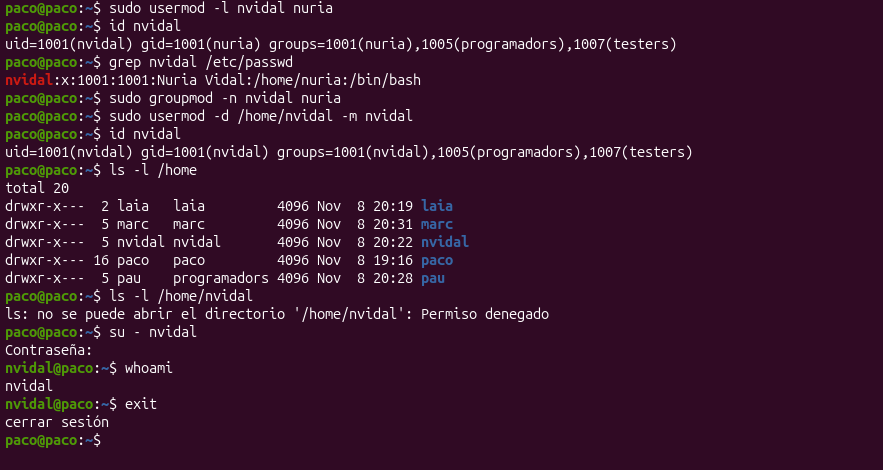
↑ Tornar a l'índex
Gestión Usuarios 2
Se pedía organizar el acceso a las carpetas de PixelForge mediante permisos, propietarios, SGID, sticky bit, ACL y umask. Se han preparado las carpetas, aplicado permisos numéricos y simbólicos, comprobado accesos, probado sticky bit y ACL e inspeccionado umask y SUID.
Creación de /srv/pixelforge, sus cuatro subcarpetas y los archivos iniciales. Los directorios pertenecen a root:root. mkdir prepara las carpetas codi, art, proves y compartit, y touch crea los archivos de ejemplo. Al ejecutar estas órdenes con sudo, sus propietarios iniciales son root.
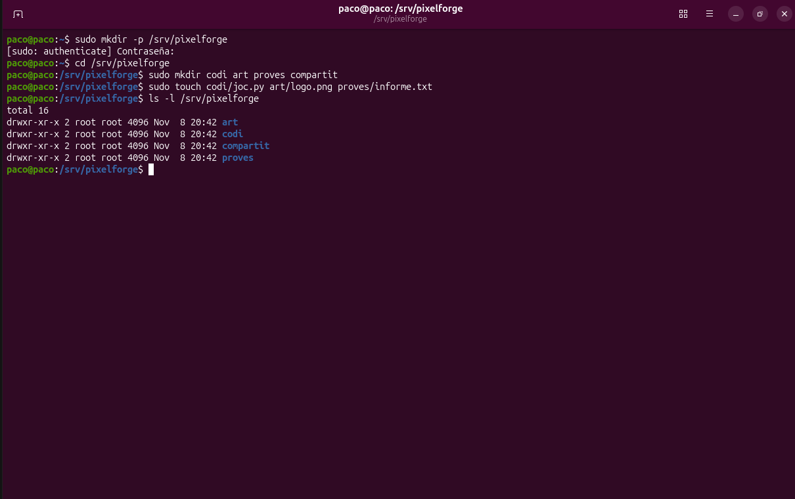
La carpeta codi tiene permisos 750 y pertenece a root. El usuario paco no puede consultar joc.py por falta de acceso al directorio. Los permisos 750 conceden acceso completo al propietario y lectura y acceso al grupo, pero ninguno al resto. La falta de permiso de acceso al directorio impide consultar el archivo que contiene.
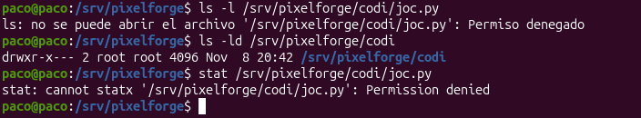
Asignación numérica de permisos: codi 750, art 755 e informe.txt 640. El contenido de codi se consulta con sudo. La opción -R aplica el cambio de codi también a su contenido. Los listados permiten comprobar los permisos finales, utilizando sudo cuando el usuario normal no puede acceder.
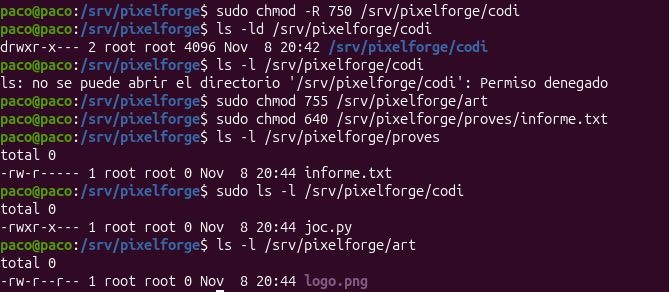
Modificación simbólica de los permisos de art: se retira y repone escritura del propietario y se elimina el acceso de otros. La notación simbólica modifica permisos concretos: u-w retira escritura al propietario, u+w la devuelve y o= deja sin permisos a los demás. ls -ld muestra el resultado sobre la propia carpeta.
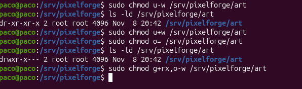
Pau puede crear nivell1.py en codi, pero no intrus.txt en proves. Se observan la propiedad pau:programadors y el grupo testers en proves. La prueba compara dos directorios con propietarios y permisos diferentes. El archivo se crea donde pau tiene permiso de escritura; en proves, touch devuelve un error de acceso.
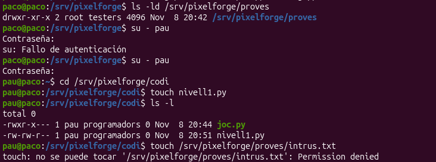
Se habilita escritura del grupo, pero nvidal no consigue ejecutar sudo chmod g+s. La carpeta no muestra la s y so.py conserva el grupo nvidal. La prueba pretende que los archivos nuevos hereden el grupo de la carpeta. Como no se activa SGID, el archivo creado por nvidal sigue utilizando su grupo principal y no programadors.
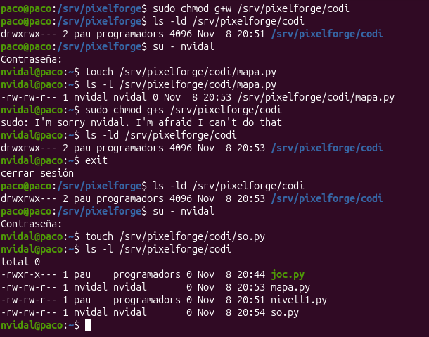
Sin sticky bit, marc puede borrar el archivo de pau. Tras aplicar chmod +t, el mismo intento termina con Operación no permitida. El sticky bit se reconoce por la t al final de los permisos. En esta prueba protege el archivo de pau frente al borrado por marc, aunque ambos puedan escribir en el directorio compartido.
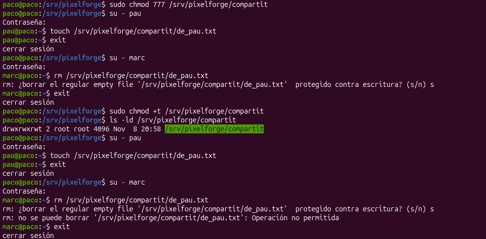
Una ACL permite a marc listar codi. Después se elimina su entrada con setfacl -x y se comprueba con getfacl. La entrada user:marc:r-x concede lectura y acceso a ese usuario sin añadirlo al grupo del directorio. La consulta final permite comprobar que esa autorización específica se ha retirado.
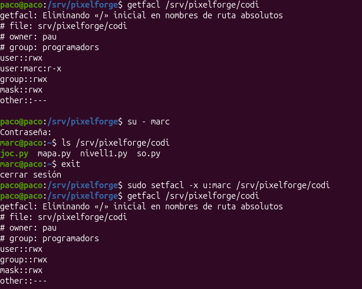
Comparación de umask 0002 y 027, que genera archivos 640 y directorios 750 en la segunda prueba. Se inspecciona SUID en passwd y otros ejecutables. umask restringe los permisos iniciales de los nuevos archivos y carpetas. En la segunda parte, la s de passwd identifica SUID y find localiza otros ejecutables que tienen activado ese bit.
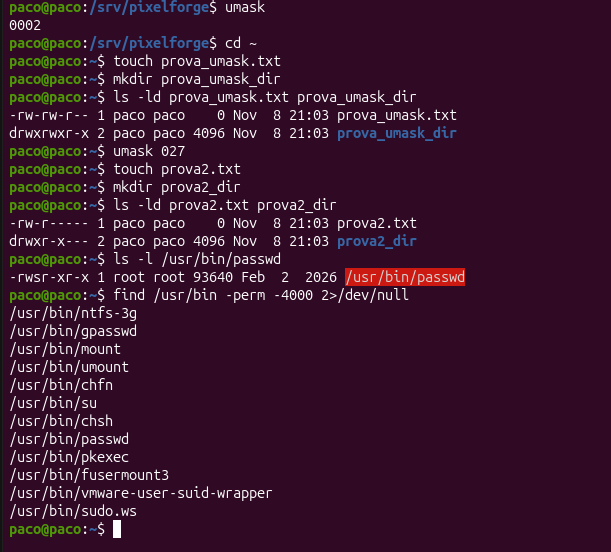
↑ Tornar a l'índex